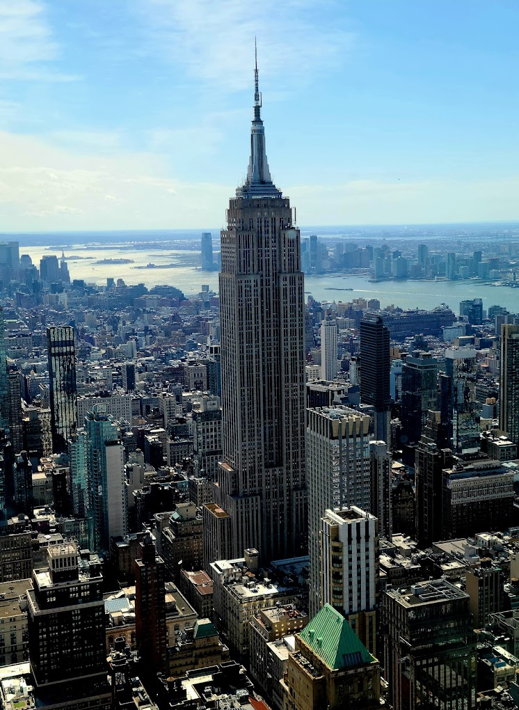
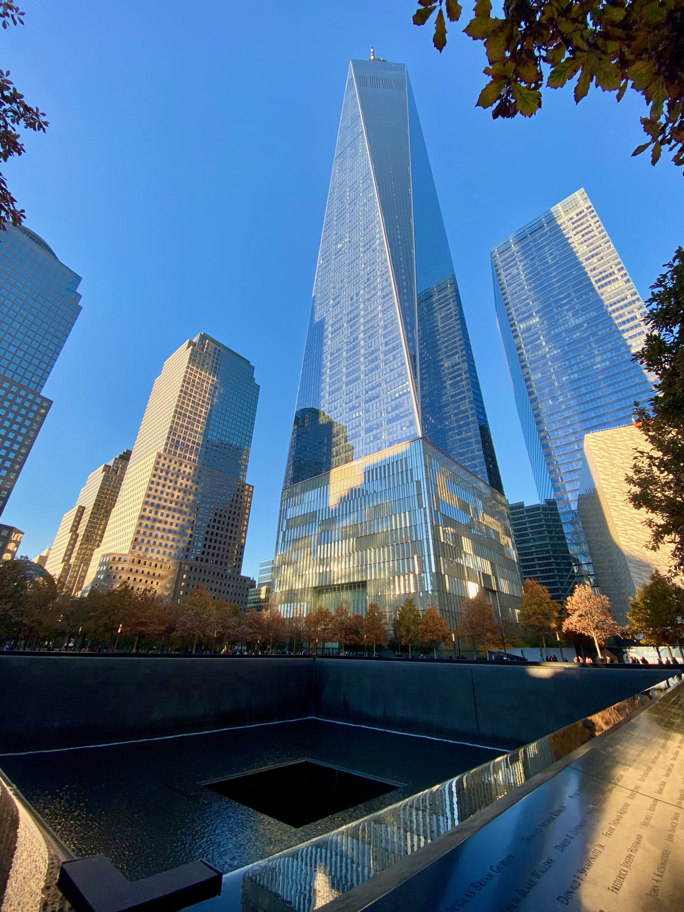
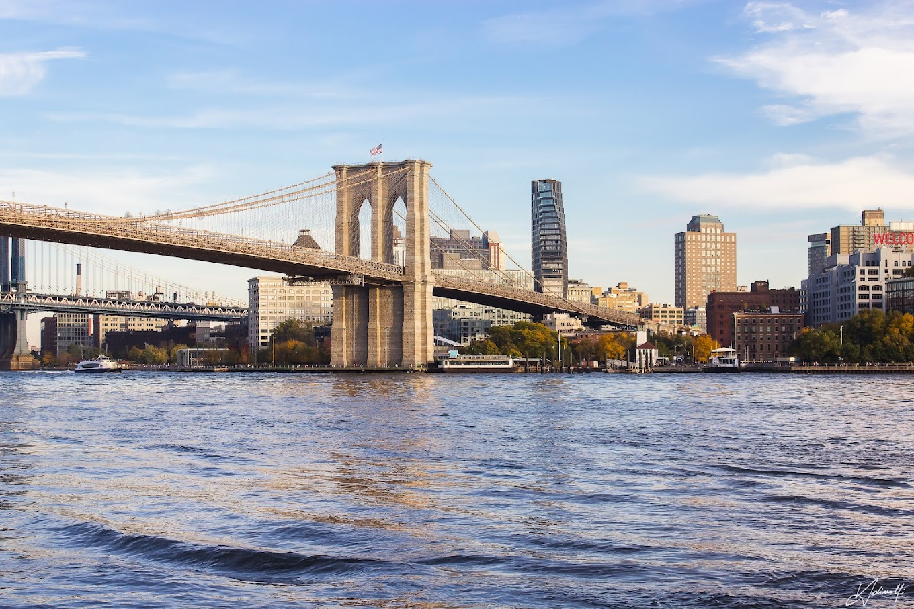
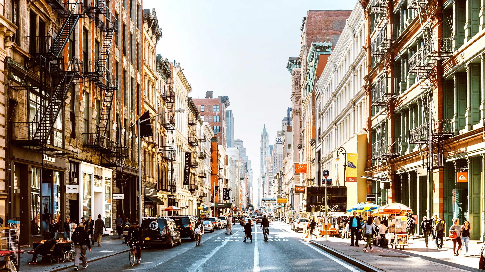
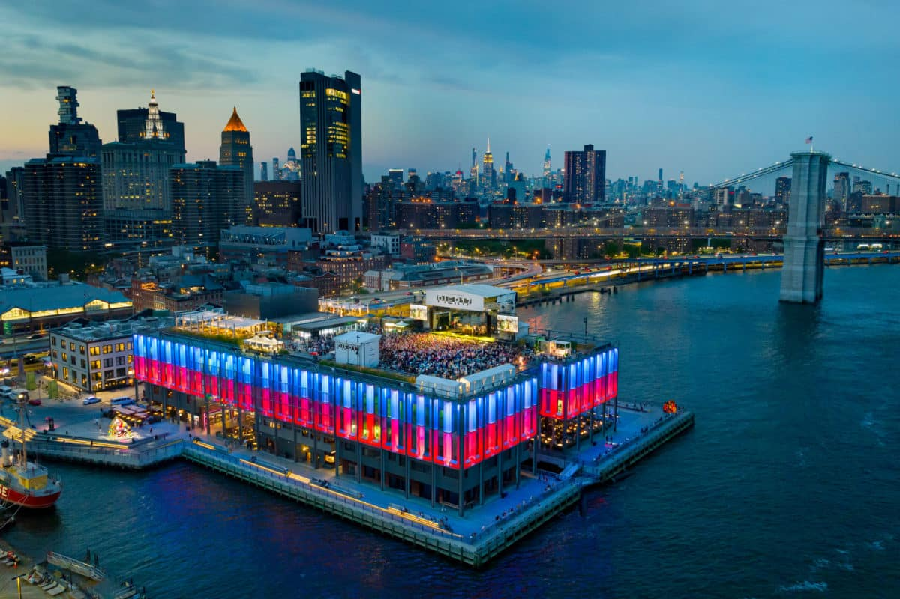
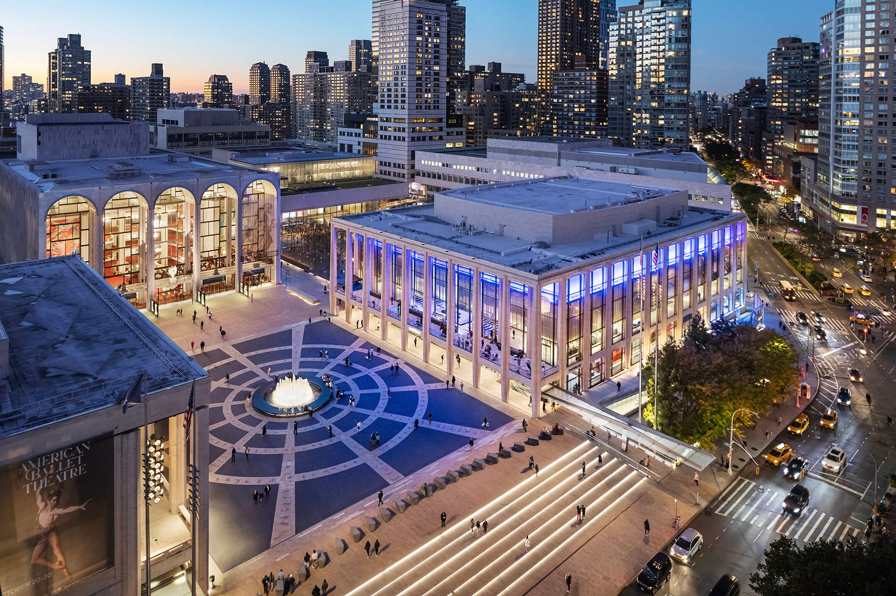
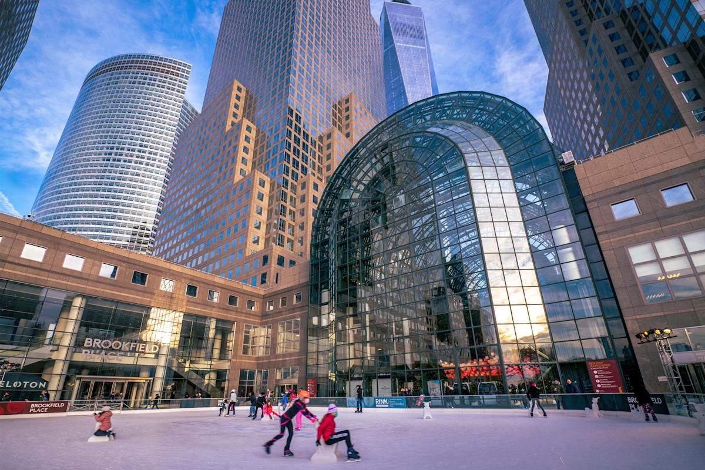

The Statue of Liberty was a gift from France to the United States in 1886, designed by Frédéric Auguste Bartholdi to celebrate freedom and the friendship between the two nations. It is now located on Liberty Island in New York Harbor, welcoming visitors and symbolizing hope and opportunity.

The Empire State Building was completed in 1931 during the Great Depression and was designed by the architectural firm Shreve, Lamb & Harmon. It is located in Midtown Manhattan in New York City and remains one of the most famous skyscrapers in the world.

One World Trade Center, also known as Freedom Tower, was completed in 2014 as the main building of the rebuilt World Trade Center complex following 9/11. It stands in Lower Manhattan and is the tallest building in the United States.

The Brooklyn Bridge was completed in 1883 and was designed by engineer John A. Roebling. It stretches across the East River, connecting Manhattan and Brooklyn and remains one of the city’s most iconic landmarks.

Hudson Yards opened in 2019 as a large-scale real estate development on Manhattan’s West Side. It includes shops, offices, residences, and landmarks like the Vessel.

SoHo, short for “South of Houston Street,” was developed in the 19th century as an industrial area filled with cast-iron buildings and warehouses. Today, it is a neighborhood known for its art galleries, boutiques, and historic architecture.

The South Street Seaport developed in the early 19th century as a major shipping port and commercial hub for New York. Today, it is a waterfront area in Lower Manhattan featuring shops, restaurants, and restored ships.

Lincoln Center opened in 1962 as part of an urban project led by philanthropist John D. Rockefeller III to create a major cultural center in New York. Today, it houses world-renowned organizations such as the New York Philharmonic and the Metropolitan Opera.

Brookfield Place opened in the 1980s as part of the Financial District development along the Hudson River. Today, it is a major shopping, dining, and office complex in Lower Manhattan, connected to the downtown waterfront.